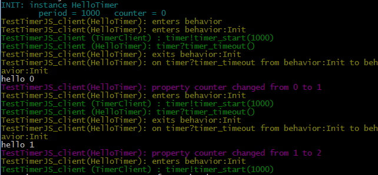

Model HD-Service logic with ThingML components
The service developer uses ThingML to define the components of the HD-Service and implement the logic of those components.
State machines are a common formalism to express reactive behavior that needs to react on some events, correlate events, and produce some new events. A state machine-based programming language, and ThingML in particular, is thus a good candidate to implement Kevoree components and write the logic that orchestrates the different ports of this component.
Define interfaces:
Let's consider a simple ThingML program made of two things, basically involving message to deal with a timer:
thing fragment TimerMsgs {
// Start the Timer
message timer_start(delay : Integer);
// Cancel the Timer
message timer_cancel();
// Notification that the timer has expired
message timer_timeout();
}
First, a timer:
thing fragment Timer includes TimerMsgs
{
provided port timer
{
sends timer_timeout
receives timer_start, timer_cancel
}
}
Implement the logic using state machines and action languages
A simple client using the timer could be:
thing HelloTimer includes TimerMsgs {
required port timer {
receives timer_timeout
sends timer_start, timer_cancel
}
readonly property period : Integer = 1000
property counter : Integer = 0
statechart behavior init Init {
state Init {
on entry do
timer!timer_start(period)
end
transition -> Init //this will loop on the Init state, and start a new timer
event timer?timer_timeout
action do
print "hello "
print counter
print "\n"
counter = counter + 1
end
}
}
}
This simple, platform-independent service basically outputs a "hello n" every second. This is realized by starting a timer when entering the Init state. On timeout, a timer_timeout message is received, triggering the prints, before it re-enters the Init state.
Basically, this would produce the following outputs:
hello 0
hello 1
hello 2
Alternatively, the previous example can be refactored in the following way to keep the state machine clean:
thing HelloTimer includes TimerMsgs {
required port timer {
receives timer_timeout
sends timer_start, timer_cancel
}
readonly property period : Integer = 1000
property counter : Integer = 0
function printHello() do
print "hello "
print counter
print "\n"
counter = counter + 1
end
statechart behavior init Init {
state Init {
on entry do
timer!timer_start(period)
end
transition -> Init //this will loop on the Init state, and start a new timer
event timer?timer_timeout
action printHello()
}
}
}
More generally the general syntax for a function is:
function myFunction(param1 : ParamType1, param2 : ParamType2) : ReturnType do
...
end
Like in most programming languages, functions are particularly useful to encapsulate code that is called from multiple places, to avoid duplication.
The HEADS action and expression language is fairly aligned with major programming languages such as Java, JavaScript or C:
- variable definitions and affectations
var i : Integer = 0,- algebraic (
+,-, etc) and boolean operators (andandor)- control structures
if (true) do ... end else do ... end,while(true) do ... endprint "hello"anderror "alert!"- function calls
myFunction(0, 1)In addition to the "normal" statements common with those language, HEADS provides:
- send a message
myPort!myMessage(),myPort!myMessage2(a, b, 0)for asynchronous message passing between components
Implement advanced logic with Complex Event Processing
The HEADS modelling language has been extended with CEP concepts (See D2.2 for more details). CEP complements state machines and provides more powerful abstractions to handle streams of events, for example to compute the average of the values provided by a sensor on a given time window, or to when some behavior should be triggered when two events happen "at the same time". While this can be expressed with state machines, this typically implies instantiating timers and arrays (to manage time windows), managing different interleaving, etc, i.e. this generates accidental complexity. Those CEP concepts are mapped to the ones provided by ReactiveX.
Join
The join operator "combines items emitted by two Observables whenever an item from one Observable is emitted during a time window defined according to an item emitted by the other Observable". See the figure below (taken from ReactiveX documentation) to get an idea of how it works.

This is expressed in the HEADS modelling language using this syntax:
stream simpleJoinWithParams @TTL "100" do
from [e1 : receivePort?m1 & e2 : receivePort?m2 -> cep1(e1.v1 + e2.v1)]
select a : #0, b : #1
action sendPort!cep1(a, b)
end
Whenever a message m1 and a message m2 are received within 100 ms, it will produce a cep1 message.
The same query expressed directly using the ReactiveX API would require about 15 lines of code (in Java or here in JavaScript):
//Code sample taken from ReactiveX documentation
var xs = Rx.Observable.interval(100)
.map(function (x) { return 'first' + x; });
var ys = Rx.Observable.interval(100)
.map(function (x) { return 'second' + x; });
var source = xs
.join(
ys,
function () { return Rx.Observable.timer(0); },
function () { return Rx.Observable.timer(0); },
function (x, y) { return x + y; }
)
.take(5);
var subscription = source.subscribe(
function (x) { console.log('Next: ' + x); },
function (err) { console.log('Error: ' + err); },
function () { console.log('Completed'); });
The declarative syntax of the HEADS modelling language for CEP concepts hence greatly simplifies the expression of CEP queries. Moreover, the stream expressed above can be compiled to Java or JavaScript with no modification, the compiler taking care of mapping to the Java and JS version of the ReactiveX APIs.
Merge
The Merge operator "combine multiple Observables into one by merging their emissions". See the figure below (taken from ReactiveX documentation) to get an idea of how it works.

This is expressed in the HEADS modelling language using this syntax:
stream simpleMerge do
from [e1 : receivePort?m1 | e2 : receivePort?m2 -> cep1()]
action sendPort!cep1()
end
The same query expressed directly using the ReactiveX API would require about 15 lines of code (in JavaScript or here in Java):
//Code sample taken from ReactiveX documentation
Observable<Integer> odds = Observable.just(1, 3, 5).subscribeOn(someScheduler);
Observable<Integer> evens = Observable.just(2, 4, 6);
Observable.merge(odds, evens)
.subscribe(new Subscriber<Integer>() {
@Override
public void onNext(Integer item) {
System.out.println("Next: " + item);
}
@Override
public void onError(Throwable error) {
System.err.println("Error: " + error.getMessage());
}
@Override
public void onCompleted() {
System.out.println("Sequence complete.");
}
});
Filter
A Filter "emits only those items from an Observable that pass a predicate test". See the figure below (taken from ReactiveX documentation) to get an idea of how it works.

This is expressed in the HEADS modelling language using this syntax:
operator lessThan4(m : m1) : Boolean
return m.x < 4
stream filterLessThan4 do
from m : [ e1 : recv?m1 -> res(e1.x)]::filter(lessThan4(m))
select a : #0
action send!res(a)
end
The same query expressed directly using the ReactiveX API would require about 15 lines of code (in JavaScript or here in Java):
//Code sample taken from ReactiveX documentation
Observable.just(1, 2, 3, 4, 5)
.filter(new Func1<Integer, Boolean>() {
@Override
public Boolean call(Integer item) {
return( item < 4 );
}
}).subscribe(new Subscriber<Integer>() {
@Override
public void onNext(Integer item) {
System.out.println("Next: " + item);
}
@Override
public void onError(Throwable error) {
System.err.println("Error: " + error.getMessage());
}
@Override
public void onCompleted() {
System.out.println("Sequence complete.");
}
});
Aggregator and Windows
A Window (or Buffer) "periodically gathers items emitted by an Observable into bundles and emit these bundles rather than emitting the items one at a time". See the figure below (taken from ReactiveX documentation) to get an idea of how it works.

This is expressed in the HEADS modelling language using this syntax:
stream lengthW do // compute min, max, average of m2.x on windows of 5 seconds
from e : [recv?m2]::timeWindow(5000, 5000)
select avg : average(e.x[]), min : min(e.x[]), max : max(e.x[])
action send!res2(avg, min, max)
end
Aggregators are normal functions that takes arrays (corresponding to the content of a window/buffer) as parameter:
function average(x : Integer[]) : Float do
var i : Integer = 0
var sum : Integer = 0
while (i < x.length) do
sum = sum + x[i]
i = i + 1
end
return sum / x.length
end
Those aggregators are typically defined in a reusable libraries that any stream can then use directly.
Debugging
Traces are a common way of understanding the execution of a program, identify and solve bugs. Traces can automatically be added to trace:
- the initialization of instances, with values for all attributes. Those traces appear in light blue in the figure below.
- the execution of the state machine (which states are being entered/exited, which transition are triggered, etc). Those traces appear in yellow in the figure below.
- the emission/reception of messages on ports. Those traces appear in green in the figure below.
- the affectation of variables. Those traces appear in magenta/purple in the figure below.
- the execution of functions. Those traces appear in dark blue (not present in the figure below).
Using @debug "true" and @debug "false" the service developer can finely filter the elements he wants to trace.
